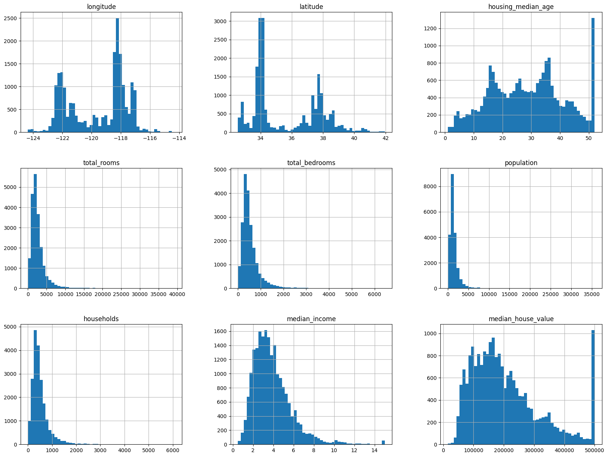

import os
import tarfile
import urllib
Download_Root = "https://raw.githubusercontent.com/ageron/handson-ml2/master/"
Housing_Path = os.path.join("Data","housing") # for creating your local directory with DATA as main directory and housign as sub directory
Housing_URL = Download_Root + "datasets/housing/housing.tgz"
def fetch_housing_data(housing_url = Housing_URL,housing_path = Housing_Path):
os.makedirs(housing_path,exist_ok = True)# Will create a directory with name at housing path , exist_ok will check if it already exist , if yes leaving it unaltered
tgz_path = os.path.join(housing_path,"housing.tgz")
urllib.request.urlretrieve(housing_url,tgz_path)
housing_tgz = tarfile.open(tgz_path)
housing_tgz.extractall(path=housing_path)
housing_tgz.close()
fetch_housing_data() # call the functionHands-On Machine Learning with Scikit-Learn ,Keras and Tensorflow
Introduction
A pure code based implementation with necessary mathematical formulations included.
End to End machine Learning
Performance Measure
Root Mean Square Error RMSE(\textbf{X},h)= \sqrt{\frac{\sum_{i = 1}^{m}{(h{(x^{(i)})- y ^{(i)}}})^2}{m}} $ m - $ is the number of instances in the datasets you are measuring the RMSE on
$x^{(i)} - $ is the vector of all teh feature values of the i^{th} instance in the dataset
$y^{(i)} - $ is its label
$ - $ is the matrix containing all the feature value of all the instances in the dataset. x^{(i)} transpose is the i^{th} row in \textbf{X}
h - is the system’s prediction function also called as hypothesis. It is also represented by \hat{y} where \hat{y}^{(i)} = h(x^{(i)})
$ RMSE(,h) - $ is the cost function measured on the set of examples using the hypothesis h
Mean absolute Error MAE(\textbf{X},h)= \frac{\sum_{i = 1}^{m}{|h{(x^{(i)})- y ^{(i)}}}|}{m}
The difference between these two performance measure is how the norm is caculated. RSME makes use of \mathcal{l}_2 norm while MAE makes use of \mathcal{l}_1 norm.
Download the DATA
import pandas as pd
def load_housing_data(housing_path = Housing_Path):
csv_path = os.path.join(housing_path,"housing.csv")
return pd.read_csv(csv_path)housing = load_housing_data()
housing.head()| longitude | latitude | housing_median_age | total_rooms | total_bedrooms | population | households | median_income | median_house_value | ocean_proximity | |
|---|---|---|---|---|---|---|---|---|---|---|
| 0 | -122.23 | 37.88 | 41.0 | 880.0 | 129.0 | 322.0 | 126.0 | 8.3252 | 452600.0 | NEAR BAY |
| 1 | -122.22 | 37.86 | 21.0 | 7099.0 | 1106.0 | 2401.0 | 1138.0 | 8.3014 | 358500.0 | NEAR BAY |
| 2 | -122.24 | 37.85 | 52.0 | 1467.0 | 190.0 | 496.0 | 177.0 | 7.2574 | 352100.0 | NEAR BAY |
| 3 | -122.25 | 37.85 | 52.0 | 1274.0 | 235.0 | 558.0 | 219.0 | 5.6431 | 341300.0 | NEAR BAY |
| 4 | -122.25 | 37.85 | 52.0 | 1627.0 | 280.0 | 565.0 | 259.0 | 3.8462 | 342200.0 | NEAR BAY |
housing.info()<class 'pandas.core.frame.DataFrame'>
RangeIndex: 20640 entries, 0 to 20639
Data columns (total 10 columns):
# Column Non-Null Count Dtype
--- ------ -------------- -----
0 longitude 20640 non-null float64
1 latitude 20640 non-null float64
2 housing_median_age 20640 non-null float64
3 total_rooms 20640 non-null float64
4 total_bedrooms 20433 non-null float64
5 population 20640 non-null float64
6 households 20640 non-null float64
7 median_income 20640 non-null float64
8 median_house_value 20640 non-null float64
9 ocean_proximity 20640 non-null object
dtypes: float64(9), object(1)
memory usage: 1.6+ MBhousing["ocean_proximity"].value_counts()<1H OCEAN 9136
INLAND 6551
NEAR OCEAN 2658
NEAR BAY 2290
ISLAND 5
Name: ocean_proximity, dtype: int64housing.describe()| longitude | latitude | housing_median_age | total_rooms | total_bedrooms | population | households | median_income | median_house_value | |
|---|---|---|---|---|---|---|---|---|---|
| count | 20640.000000 | 20640.000000 | 20640.000000 | 20640.000000 | 20433.000000 | 20640.000000 | 20640.000000 | 20640.000000 | 20640.000000 |
| mean | -119.569704 | 35.631861 | 28.639486 | 2635.763081 | 537.870553 | 1425.476744 | 499.539680 | 3.870671 | 206855.816909 |
| std | 2.003532 | 2.135952 | 12.585558 | 2181.615252 | 421.385070 | 1132.462122 | 382.329753 | 1.899822 | 115395.615874 |
| min | -124.350000 | 32.540000 | 1.000000 | 2.000000 | 1.000000 | 3.000000 | 1.000000 | 0.499900 | 14999.000000 |
| 25% | -121.800000 | 33.930000 | 18.000000 | 1447.750000 | 296.000000 | 787.000000 | 280.000000 | 2.563400 | 119600.000000 |
| 50% | -118.490000 | 34.260000 | 29.000000 | 2127.000000 | 435.000000 | 1166.000000 | 409.000000 | 3.534800 | 179700.000000 |
| 75% | -118.010000 | 37.710000 | 37.000000 | 3148.000000 | 647.000000 | 1725.000000 | 605.000000 | 4.743250 | 264725.000000 |
| max | -114.310000 | 41.950000 | 52.000000 | 39320.000000 | 6445.000000 | 35682.000000 | 6082.000000 | 15.000100 | 500001.000000 |
%matplotlib inline
import matplotlib.pyplot as plt
housing.hist(bins = 50 ,figsize = (20,15))array([[<AxesSubplot: title={'center': 'longitude'}>,
<AxesSubplot: title={'center': 'latitude'}>,
<AxesSubplot: title={'center': 'housing_median_age'}>],
[<AxesSubplot: title={'center': 'total_rooms'}>,
<AxesSubplot: title={'center': 'total_bedrooms'}>,
<AxesSubplot: title={'center': 'population'}>],
[<AxesSubplot: title={'center': 'households'}>,
<AxesSubplot: title={'center': 'median_income'}>,
<AxesSubplot: title={'center': 'median_house_value'}>]],
dtype=object)
Few point about the data
The median income is capped at 15 for higher median incomes and at 0.5 for lower median incomes. The numbers are denominated in $10000 i.e 3 in the chart represents 30,000 USD
The housing median age and median house value were also capped. Since median house value is our target variable this is a source of a problem.The prediction might never go beyond the capped limit.
The attributes have different scales
Many of the histograms are tail-heavy. Important to normalize the data as some machine learning algorithims might fail to detect patterns effectively
Creating a test set and train set
import numpy as np
np.random.seed(50)# will always give the same test set and train set
def split_train_test(data,test_ratio):
shuffled_indices = np.random.permutation(len(data))
test_set_size = int(len(data)*test_ratio)
test_indices = shuffled_indices[:test_set_size]
train_indices = shuffled_indices[test_set_size:]
return data.loc[train_indices] ,data.loc[test_indices]
train_set , test_set = split_train_test(housing,0.2)
print(len(train_set))
print(len(test_set))16512
4128